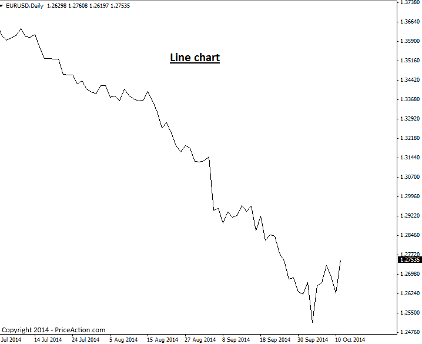

Introduction to Price Charts
Introduction to Price Charts
A price chart displays the price of a particular market over a period of time. You can change between different time frames on any charting platform. Chart time frames range from 1 minute charts all the way up to monthly and yearly charts.
There are three main types of charts: Line charts, Bar charts and Candlestick charts. For price action trading, the candlestick chart is most commonly accepted as the ‘best’ type of chart to use.
However, let’s go through a brief overview of each chart type just so you get familiar with them…
Line Charts
Line charts display the price of a market via a line that typically connects the close of one time period to the close of another. Here’s an example of a line chart:

The main advantage of a line chart lies in providing you with a quick view of the overall market trend and support and resistance levels. They are not practical to make trade entry or exit decision from because they do not display individual price bars. However, as previously stated, if you want to get a quick view of market trend and key levels, a line chart may prove useful occasionally.
Bar Charts
A bar price chart shows a ‘standard price bar’ for the time frame being observed. If you’re looking at a 1 hour chart, you will see a standard price bar for each 1 hour time period, a daily bar chart will show a standard bar for each day on the chart, etc.
Each individual price bar gives us four pieces of information that we can use to help us make our trading decisions: The open, high, low, and close. You will sometimes see bar charts called OHLC charts (open, high, low, close charts), here’s an example of one price bar:

A bar chart will display each period of time as a standard OHLC price bar, as seen here:

Candlestick Charts
Candlestick charts are price charts that consist of candlesticks instead of traditional price bars, as discussed above. Each candlestick shows the high, low, open and close for the period of time it reflects, this is the same information reflected in traditional price bars, but candlesticks make this information much easier to visualize and make use of…
Candlestick charts indicate the high and low of the given time period just as bar charts do, with a vertical line. The top vertical line is called the upper shadow while the bottom vertical line is called the lower shadow; you might also see the upper and lower shadows referred to as “wicks” or “tails”. The main difference between bar charts and candlesticks charts, lies in how candlestick charts display the opening and closing price. The large block in the middle of the candlestick indicates the range between the opening and closing price. Traditionally this block is called the “real body”.

Typically, if the real body is filled in, or darker in color the currency closed lower than it opened, and if the real body is left unfilled, or usually a lighter color, the currency closed higher than it opened. For example, if the real body is white or another light color, the top of the real body likely indicates the close price and the bottom of the real body indicates the open price. If the real body is black or another dark color, the top of the real body likely indicates the open price and the bottom indicates the close price (I used the word “likely” since you can make the real body whatever color you want).
Here’s an example of the same chart used in the line and bar chart examples above, as a candlestick charts:

Why Candlestick Charts are best for Price Action Trading
For the following reasons and more, most professional traders use candlestick charts…
A candlestick chart provides traders with a quick view of overall market sentiment via the colored real bodies of the bars. If a market is very bullish, you will see a lot of white (or whichever color you choose) real bodies, if it’s very bearish for example, you’ll see a lot of black real bodies, this is one big advantage of candlestick charts. The dramatic visual contrast from one candlestick to the next, enables traders to more easily spot price action strategies and visualize the differences in dynamics between price bars in a significantly easier and more enjoyable manner than using standard bar charts.
It’s very important that you use the correct candlestick charting platform, as not all are created equal. The Forex market closes each day following New York trading, at 5pm New York Eastern time. Also, there are 5 full trading days per week in each major trading center around the world. Therefore, you want to use candlestick charts with 5 daily bars per week (not 6 as some show) and that reflect the actual Forex market closing time each day of 5pm NY time. You can download them here.
Original source : https://priceaction.com/price-action-university/beginners/price-charts/